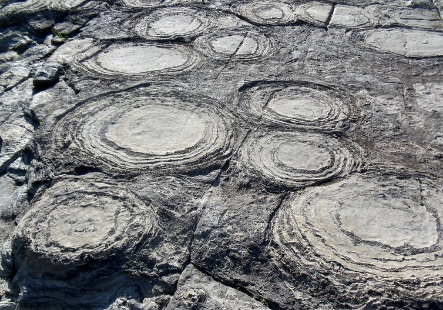
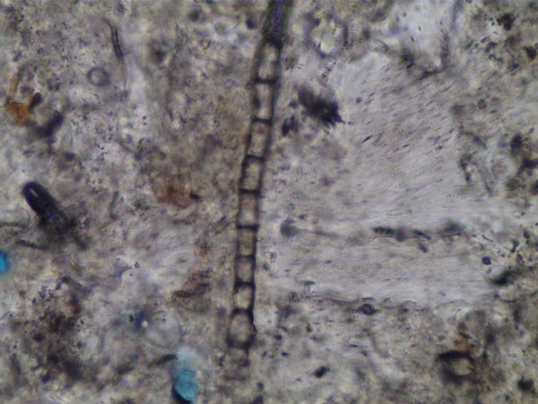

There are several strategic, practical and scientific reasons for humans to explore Mars. Among them we know that Mars is the most accessible place in the solar system. Additionally, exploring Mars provides the opportunity to possibly answer origin and evolution of life questions, and could someday be a destination for survival of humankind.
In the strategic sense, exploring Mars demonstrates our political and economic leadership as a nation, improves the quality of life on Earth, helps us learn about our home planet, and expands US leadership in the peaceful, international exploration of space.
From a practical perspective we know that Mars is unique across the entire solar system in that it is a terrestrial planet with an atmosphere and climate, its geology is known to be very diverse and complex (like Earth), and it appears that the climate of Mars has changed over its history (like Earth)
Overall, many of the key questions in solar system science can be addressed effectively by exploring Mars. This endeavor also serves to inspire the next generation of explorers and dramatically expand human knowledge.
SUCCESS OF MISSION MARS ?
LIFE CAN EXIST ON THE MARS AND HUMANS CAN SURVIVE ON THE MARS DUE TO ::

Evidences of "BLACK SMOKER" tube type deposits which are found on Earth also

Using an optical microscope, we were see the "MICROBIAL THREAD" in the rock slices.
Succesful Landing of "SATELLITES" on Mars and study of Mars surface